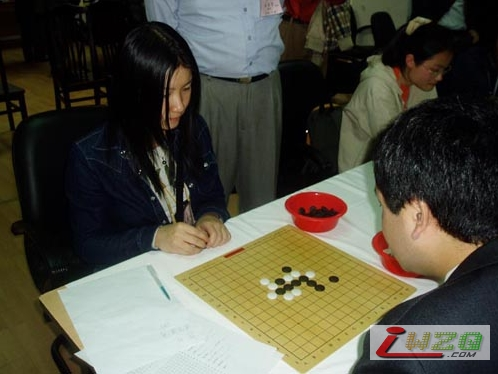

顾婉卿
#1 顾婉卿 作者：有志青年 发表时间：2007-4-10 18:06:02

04年"上海名人邀请赛"与日本棋手小岛对弈
婉卿有“小小顾”之称，是上海五子圈中著名的三顾之一，老顾（顾伟国）上海第一代棋手、坚定不移的五子推广者、擂台赛组委会成员，小顾（顾炜）上海五子棋委员会负责人，“小小顾”顾婉卿则是东华大学五子棋协会会长、高校五子棋活动积极的倡导者和组织者。“小顾”顾炜曾说婉卿若生在古代，一定是位大侠。这回，女侠担任了很具江湖意味的擂台争霸赛的先锋。
很多竞技项目都是男女分开比赛的，但棋类往往分得不那么清，女棋手战胜男棋手并不算什么新闻。即将点燃战火的首届京沪五子擂台赛就在各自七名参赛棋手中安排了一名女子先锋。擂台赛首场先锋战将由上海队顾婉卿三段对阵北京姚金蕊。由于赛制规定自第二场起攻擂方和棋则判为失败，因此首场对决不仅是为本队迎来开门红，还有争夺有利的擂主位置的实战意义。
“擂台赛这个，我很有压力……我深信京沪对抗赛的宗旨是友谊第一、比赛第二。所以硬着头皮上了，能坐在棋盘的两边就算是朋友了。
“姚金蕊四段没有交过手，听说是北京小一辈女棋手中的佼佼者，非常有实力。能过第一关我就偷笑了，我可以主动猜满江能过几关么……
“我想他至少能挺过第三关，我太信任我们的队伍了，胜利一定是属于我们的！”
看得出，阿婉挺善于给自己减压的。她提到03年的高校邀请赛，当时最后一轮对潘承铭学长。“他看到自己一个禁手失声低呼不好，本来我没看到，这一叫就看到了，于是侥幸折桂。因为当时大学生定式不是很普及，计算力和运气比较重要，而我自己背不出定式，所以碰到职业性不强的比赛比较来劲。”
“遇到职业性比赛就碰运气了，其实我每次比赛之前，道场都有好心的师兄帮我训练，但我临场真的记不住太多，全国赛时候多靠满江帮我魔鬼训练，不过现在已经没有人指望我记得住谱了，所以只帮我练习算力……”
开心的定义
“高校五子棋大赛其实我具体投入只参加了03年那届，其他多是担任主办或者协办的角色。我很尊敬顾老师的观点，就是组织者要尽可能全职，以旁观的角度，才能有更好的组织性和公证性。”
顾婉卿在上海东华大学学工业设计，关于她的聪明，“老顾”顾伟国老师曾讲过这样一个故事：
02年的某日，按习惯我一般都比较早一些去，不料这天却有好几个人早我先来了。只见顾婉卿和一位很有潜力的棋手对面而坐，神情专注，桌面上搁着两局棋。李洪斌告诉我：他们各自在解“天狗道场”的题（日本连珠杂志的残局专栏名），这场景尤似武侠小说中一对金童玉女练功打坐。顾婉卿很快在10分钟内完成了3道题。经洪斌验证，确认无误。而此时那位棋手仅完成了一题，“碗”的功力如此了得，令在场人惊叹不已，要知道“天狗之题”是很难的连珠残局。
顾伟国老师感慨：阿婉平时如能在棋上多化点时间，棋力不可限量。并在论坛写了一篇“天狗之蹄（题之谐音）置于“碗”中顷刻消化”为标题的文章。
顾婉卿说最初下棋只是借一个教室，跟同学们自备棋具下着玩。后来跟着“菜狗”（就是日后大名鼎鼎的朱建峰）去了上海五子棋协会，同学们的活动立即得到了顾炜和黄民诚的大力支持，黄民诚每两周到学校社团授一次课，顾炜、许斌、张荣虎也经常来校客座指导 。
“百人教室里，几十名社员，很安静地在进行常规的计分对弈，张捷、刘瑾文他们辅导一些来看棋的家眷，棋社很多都是情侣一起来，有时候两人都下，不会下的也在那儿，让师兄们扫盲，对局结束后，大家会很认真地思索复盘，这时候黄民诚老师就会走过去，一一分析指导，就是那种很安静，非常有秩序，气氛很好的感觉 。”
谈到那段日子，顾婉卿充满了留恋。我问她：那样的场面让你有成就感么？
“当然有了，但更多的还是感动吧，我一个人怎么能做那么多事呢，那时系里好几个同学来帮我，出漫画海报什么的，那时最想做的就是拥抱他们，我下棋的爱好那会就固定了，很多投缘的朋友在一起，不一定
#2 Re:顾婉卿 作者：百合香舍 发表时间：2007-7-27 17:17:17
人如其名，小小顾虽说不上倾国，也算倾城吧 。如花似玉的女子学棋的来来去去，一拨一拨的，能够一路走下来而且小有成就的可就不多了。
。如花似玉的女子学棋的来来去去，一拨一拨的，能够一路走下来而且小有成就的可就不多了。
#3 Re:顾婉卿 作者：五子天下 发表时间：2008-3-29 18:27:39
美女~